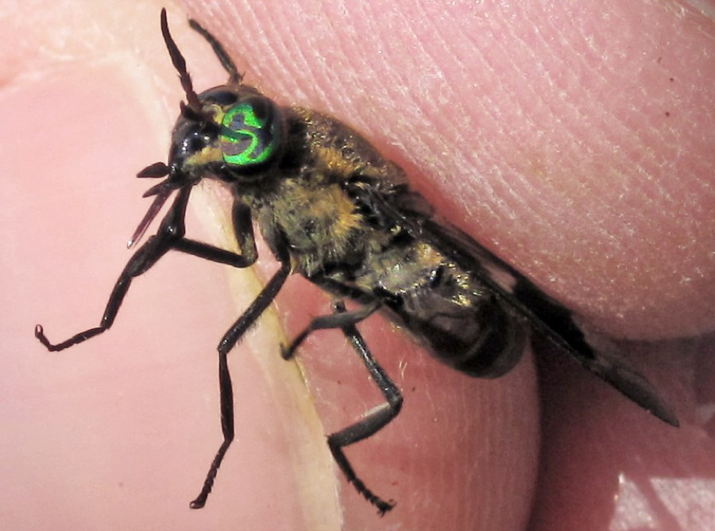
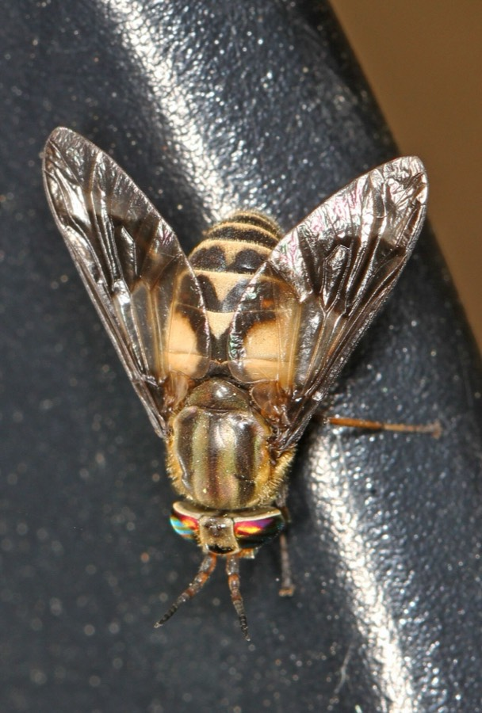

Deer Flies
Chrysops
- Also called
- Deerflies, Chrysops
- Kind
- insect
- Native to Vermont
- yes
- Legal status
- Not regulated. Twenty-nine species are known in Vermont (Vermont Public). (checked 2026-11-01)
Pictures


Names
Deer flies (genus Chrysops), blood-feeding flies of the horse fly family. Vermont Public says 29 species are known in Vermont (and more than 250 in the United States) and that they are not well studied.
Range and habitat
Found in Vermont (29 known species). Vermont Public: deer flies like to breed near water, saturated soils or the moist forest floor, and adults are found in the woods or fields. The Wisconsin sheet says the biting females are most abundant near swamps and marshes, along pond and stream banks and at the edge of wooded areas, and that adults are typically associated with broken woodlots, where they patrol the edges.
How to identify (by season; look-alikes and the key difference)
The Wisconsin sheet: slightly larger than a house fly, with dark markings on the wings and bodies that are often yellow and black striped. The photographs show a green eye with a dark zigzag mark (Ontario) and a banded yellow-and-brown body with dark-banded wings (Maryland). Horse flies are larger than deer flies (Horse Flies).
Through the year
Dates are typical for Vermont and shift with elevation and year; "approximate" means the source gave a season and the dates are a translation of it.
| When | What | Look for | What to do | Dates |
|---|---|---|---|---|
| Jun 1 to Jul 31 | flight (watch) | Deer flies are most active in June and July (University of Wisconsin sheet); Vermont Public reports numbers peaking around the end of July. They circle a person's head until they get a bite. | Plan fieldwork for the cooler, shadier or breezier part of the day; see the prevention note. | approximate |
Signs on the land (tracks, scat, browse, nests, holes, calls)
The sign is the fly itself: one that circles your head and follows you. The Wisconsin sheet says it will pursue a person until it feeds or is killed. Bites are painful and can swell and itch for days (Vermont Public).
Role in the forest (what it eats, what eats it, what it needs)
Males feed mainly on pollen and nectar. Females need blood to develop their eggs and feed on dogs, horses, cows, deer and "pretty much anything" with blood (Vermont Public). They overwinter as larvae ("maggots") and the adults emerge when the weather warms. The Wisconsin sheet says most species have one generation a year, that the larvae live in moist or wet organic matter and may be predators or vegetarians, and that eggs are laid in compact masses on overhanging vegetation or wet soil. It says adults are strong fliers that are attracted to dark moving objects and to carbon dioxide.
What helps it thrive (not something to encourage; this is what it needs, so you know where it is)
Moisture and heat. Vermont Public's entomologist said 2025 was a bad year because there was a wet spring, the flies like moisture, and then it was hot. The larvae need wet or saturated ground and moist forest floor; the sources read say nothing more about the plants or soils involved.
Managing for it (habitat practices) and living with it (conflicts and damage)
The Wisconsin sheet says no satisfactory chemical control has been developed: the larvae live in wetlands where treatment is environmentally unacceptable, adults do not rest on surfaces long enough for a residual spray to work and fogging only kills flies present at the time. Vermont Public's entomologist said the jury is out on whether bug sprays, including DEET, deter them. See Preventing Tick and Biting Fly Bites in the Woods for what to wear, what repellents the sources name and when the flies are active.
Legal status
None found.
Sources
- Vermont Public, why are there so many deer flies in Vermont this summer (2025-07-24): https://www.vermontpublic.org/local-news/2025-07-24/why-are-there-so-many-deer-flies-in-vermont-this-summer (read 2026-11-01)
- University of Wisconsin Extension, Deer Flies and Horse Flies: https://hort.extension.wisc.edu/files/2014/11/Deer_Flies_and_Horse_Flies.pdf (read as text 2026-11-01)
What this page is based on
Kind of source: primary-agency and extension (read through summarizing fetches and one text read)
What was read: Vermont Public article on the 2025 deer fly season (summarizing fetch, 2026-11-01): species count, breeding places, diet, peak and why 2025 was a bad year. University of Wisconsin Extension 'Deer Flies and Horse Flies' (Garden Facts XHT1049, read as text, 2026-11-01): identification, habitat, life cycle, control. The Wisconsin sheet is written for Wisconsin (2004); no Vermont fact sheet was found. The identification below is from that sheet and from the two photographs, which are from Ontario and Maryland.
Last checked: 2026-11-01
Vermont land and forest reference, built 2026-11-05. Rules and dates here are summaries, not legal advice; dates shift with elevation and year. Photo and recording credits · Note: _reference/US-VT/Species/Deer Flies.md